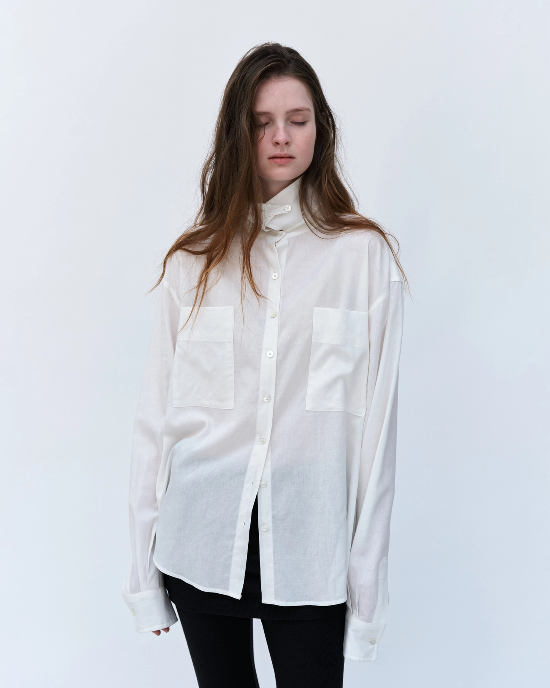
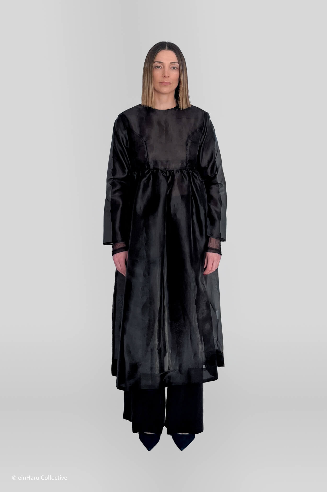
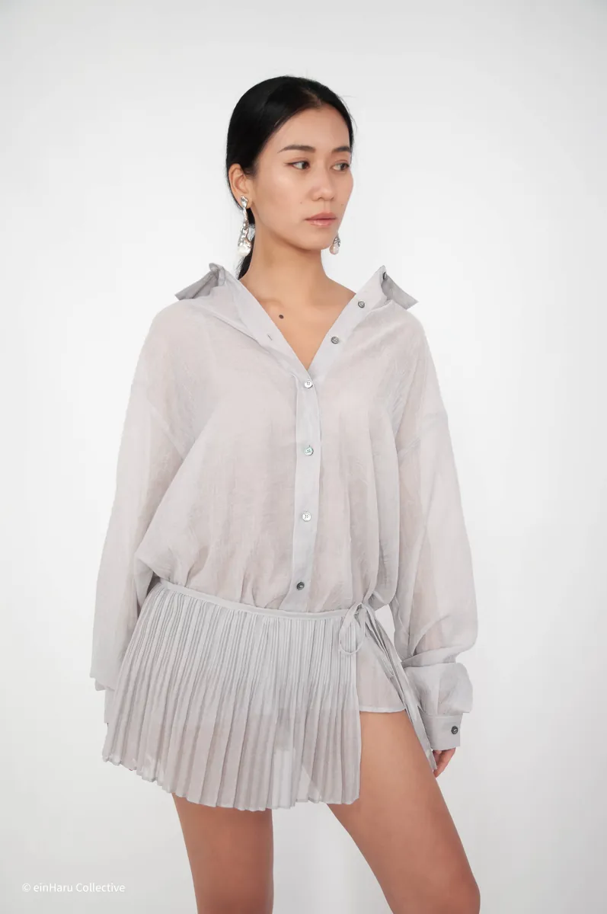
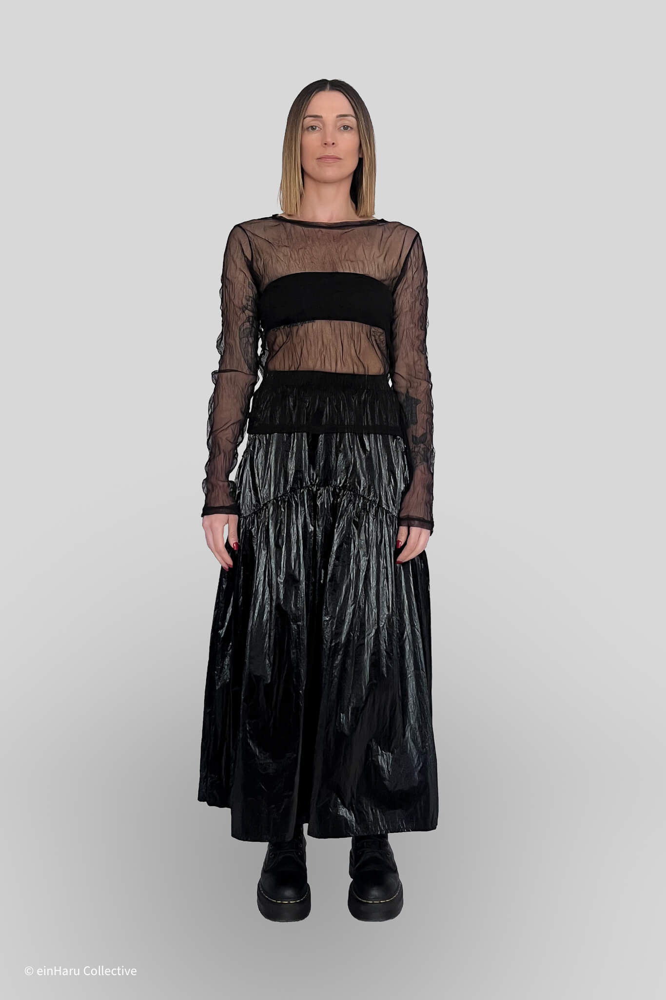
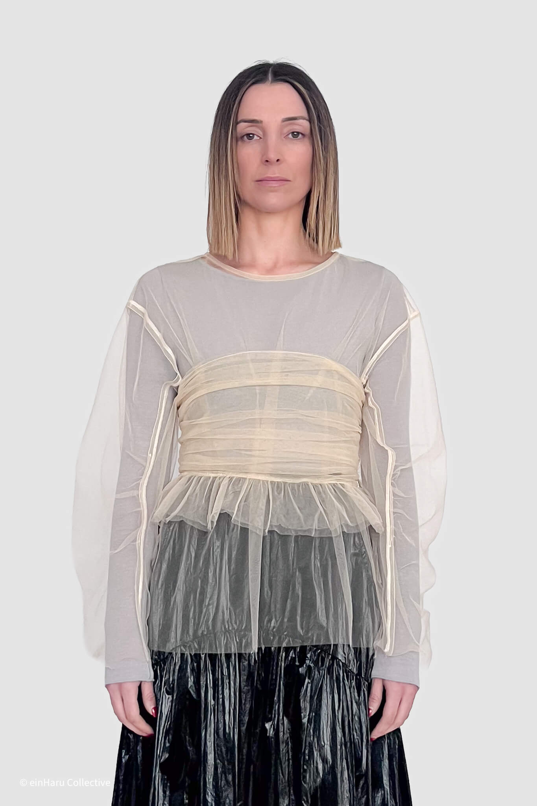

Minimalist Fashion in Berlin
einHaru Collective is a Berlin-based independent brand shaped by Seoul design culture. We curate minimalist daily wear in limited drops and small production runs for long-term use, with a focus on practical Berlin minimalist wardrobes.
Minimalist Korean designer pieces, selected in Berlin for repeat wear, not trends.
Looking for all long-form stories? Start from the Editorial hub.

Minimalist Fashion Philosophy

For us, minimalism is not empty styling. It is practical design: clear silhouettes, measured fabric behavior, and pieces that integrate into ordinary routines. We focus on clothing that can be repeated often without losing shape or relevance.
This approach supports slower consumption. Instead of trend-led turnover, we prioritize garments that work across seasons and contexts.
Berlin as a Fashion Context

Berlin's fashion language values function, individuality, and restraint. The city rewards clothes that feel intentional but unforced, especially in everyday movement between studio, street, and work settings.
einHaru operates from Berlin because this environment aligns with our criteria: useful garments, thoughtful cuts, and minimal visual noise.
The einHaru Brand Concept

einHaru is built as an independent editorial store model: smaller curated selections, clear product information, and limited availability tied to real production rather than artificial scarcity.
Our collections emphasize daily wear categories including tops, trousers, skirts, dresses, and outerwear designed for repeat use. Browse the shop page and learn more on our about page.
Seoul Influence and Small Production Runs

Seoul independent labels often combine precision with wearability: refined proportions, subtle structure, and tactile fabric choices. That influence is central to einHaru's direction.
The latest addition is Londonflat, a Seoul label whose pieces balance volume with structure. New in: Beaker Pants, Bijo Shirt, and Shearling Wrap Shirt.
We release limited drops and small production runs to maintain quality control and reduce overproduction. This is both a design decision and a sustainability decision.